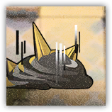

假想敌：淤困 Hypothetical Enemy: Stagnation
近战 法术；精英 构装（泥怪；源石造物）

|
 |
假想敌。参照源石的流体形态而设计的假想敌。我们曾在罗德岛本舰与这样的敌人交战。 淤困。无人知晓源石为何以此种形式呈现，但这极有可能是下一次源石灾害爆发的前兆。必须在模拟的战斗中找到方法，来消灭它、控制它，或是利用它。 |
淤困丨The Stagnation
小型构装（泥怪；源石造物），无阵营
| AC 14 | 先攻 +2（12） |
| HP 190（30d6+90） | |
| 速度 20 尺，攀爬20尺 | |
| 调整 | 豁免 | 调整 | 豁免 | 调整 | 豁免 | |||||||||
|---|---|---|---|---|---|---|---|---|---|---|---|---|---|---|
| 力量 | 14 | +4 | +4 | 敏捷 | 18 | +4 | +8 | 体质 | 16 | +3 | +3 | |||
| 智力 | 2 | -4 | +0 | 感知 | 6 | -2 | +2 | 魅力 | 1 | -5 | -1 |
| 免疫 强酸；中毒，受擒，倒地，束缚，力竭 |
| 感官 盲视30尺，被动察觉8 |
| 语言 无 |
| CR 9（XP 5,300；PB+4） |
特质 Traits
无定形Amorphous。淤困可以移动穿过最窄1寸宽的空间而无需消耗额外的移动力。
腐蚀形态Corrosive Form。非魔法弹药在命中淤困并造成伤害后立即被摧毁。非魔法武器在对淤困造成任意伤害后将积累-1的攻击检定减值。若武器的减值累计达到-5则其被摧毁。对武器施展修复术Mending可以移除这一减值。
动作 Actions
多重攻击 Multiattack。淤困发动三次淤困缠绕。
淤困缠绕 Stagnation Entangled。近战攻击检定：+8，触及5尺。命中：13（3d8+4）强酸伤害，若目标生物体型不超过巨型，其被淤困的所有粘浆擒抱，陷入受擒状态（逃脱DC15），且其受擒期间进行的任何豁免检定具有劣势。目标还会在每次于豁免检定中失败时，额外受到10点无法减免的强酸伤害。